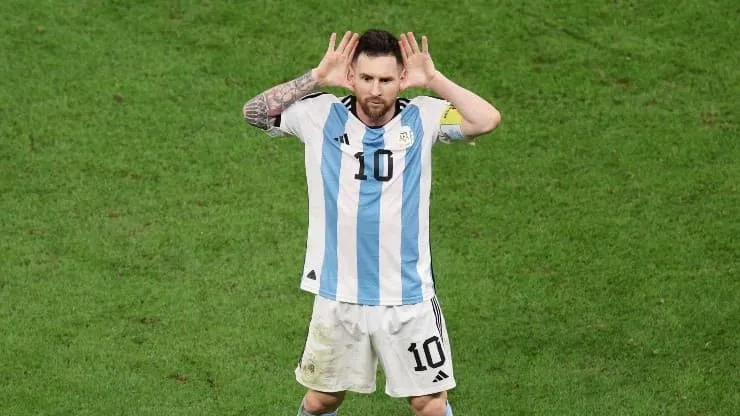

Esta ha sido la Copa del Mundo de Lionel Messi, el capitán argentino a quien muchos consideran el mejor jugador de la historia.
Consideración a la que también llegó el Comité Técnico de Qatar 2022, que lo designó el mejor jugador del torneo.
Messi ya había recibido este premio en 2014, mientras el croata Luka Modric lo hizo en 2018. Y es que tanto Messi como Modric han tenido un Mundial excelente. A estos se suman otros nombres como los de los franceses Kylian Mbappé y Antoine Griezmann, y el del marroquí Achraf Hakimi.
